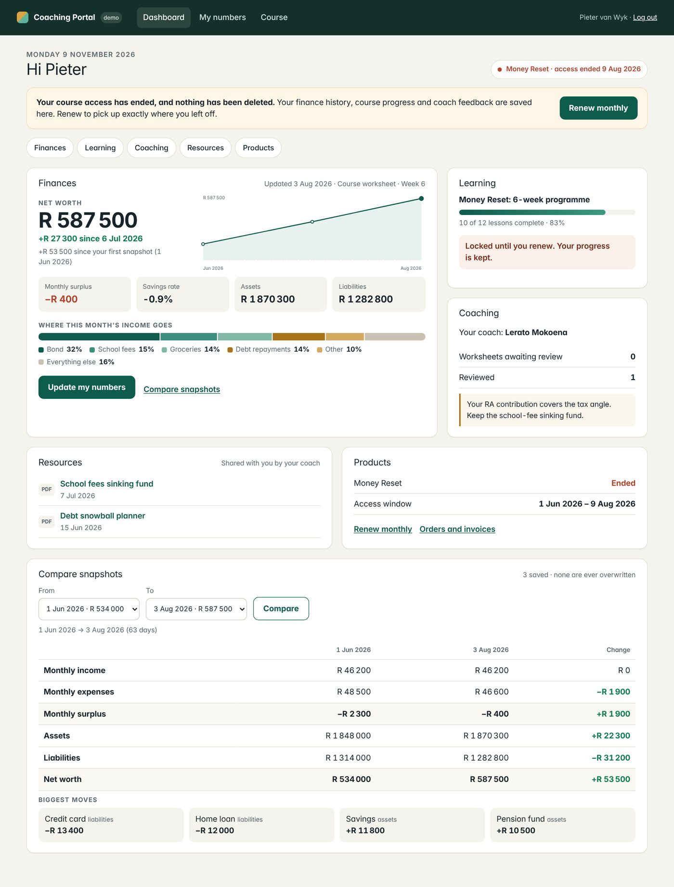
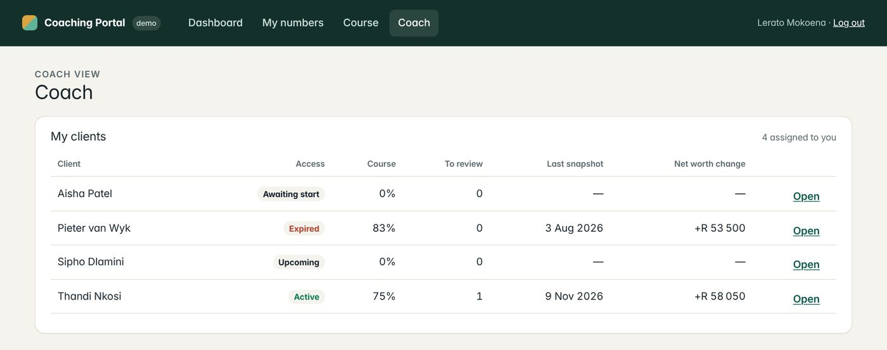
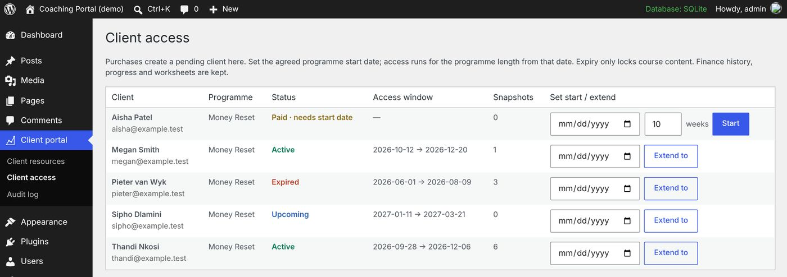
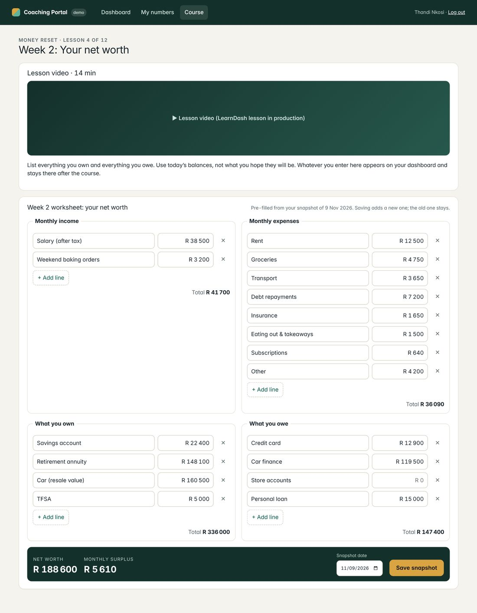
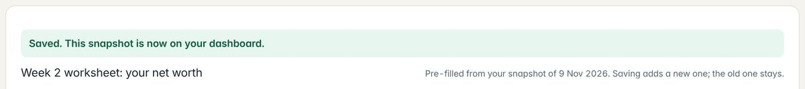
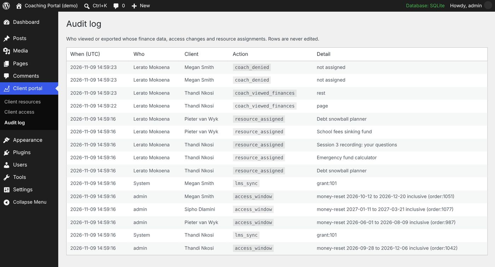

Read this first
PayPal can't charge in rand.
PayPal does not support ZAR, and store owners report that WooCommerce's PayPal gateway won't switch on for a store priced in rand. Your monthly renewals would bill South African clients in a foreign currency, with conversion on every payment. Payfast is the fix: the official WooCommerce gateway charges in rand, works with WooCommerce Subscriptions, and also takes Visa and Mastercard from other countries. See the payment plan →
The stack
Your existing site stays. Three plugins cover the standard parts. One small custom plugin, ww-portal, handles what no plugin does, and it talks to the LMS through a single adapter, so choosing LearnDash or Tutor LMS changes one file.
Defaults I've chosen (each is a setting you can change)
- Store in rand, Payfast first. PayPal stays only if some clients really need it.
- The finance tracker keeps working after access ends. It's the client's own data, and it gives them a reason to come back. Only course content locks.
- 3 grace days on monthly renewals, so a late debit order doesn't lock someone out mid-lesson.
- LearnDash's own expiry stays off. The portal owns access, so LearnDash's data-deletion switch never runs.
- Coaches see only their assigned clients, and every view of someone's finances is logged.
What's custom, what isn't
Your brief, line by line. Of 22 requirements, 8 are plugin features or settings, 13 sit in the custom plugin (about 1,700 lines of PHP, drafted and tested here), and 1 is training.
One dashboard: finances, learning, coaching, resources, products
Real screenshots of WordPress 7.1.4 with the plugin active, logged in as fictional clients. Toggle between an active client and one whose 10 weeks ended in August.





Typed once in a lesson, kept forever on the dashboard
The Week 2 worksheet and the dashboard write to the same store, so nothing has to sync. Each save adds a new dated snapshot and never overwrites an old one.



Measured end to end: a browser filled two fields in the lesson and saved, then the dashboard API returned that snapshot as the latest, with net worth up exactly R 4 050.50 and source course:money-reset/week-2.
Try the amount parser
South Africans write amounts several ways. The worksheet accepts all of these and stores whole cents, never floating-point numbers. This box runs a browser port of the PHP parser, which agrees with the PHP on 25 of 25 test strings.
Bug the tests caught: the dashboard prints negatives as "−R 400", and the first parser couldn't read that back, so a negative line would have failed to re-save. Fixed and covered by a round-trip test.
Why the numbers are safe to keep
- Encrypted at rest. XChaCha20-Poly1305 (libsodium, part of PHP). A full table dump contains no labels or amounts (tested).
- Key outside the database. It lives in
wp-config.php, so a leaked backup or SQL dump is unreadable. - Bound to owner and date. A row copied onto another client's account won't decrypt, so nobody ever sees someone else's figures (tested).
- Append-only with a hash chain. There's no update path in the code. A row back-dated or deleted directly in the database is flagged at that exact row (tested: edit at row 3, deletion at row 4).
- Exact money. Integer cents. Savings rate 54.16% from R 16 249.50 ÷ R 30 000, exactly (tested).
10 weeks from the agreed start date. Renew monthly. Lose nothing.
Drag the dates. This simulator runs a browser port of the plugin's access engine, which agreed with the PHP on 2,021 of 2,021 generated cases.
Three LearnDash defaults that would break your rules, and what the plugin does instead
LearnDash's Course Access Expiration limits access by the learner's enrolment date. Your rule is 10 weeks from the agreed start date, which can be weeks after payment.
Access windows store the agreed start date. LearnDash expiry stays off.
The same setting can delete course and quiz data after expiry, and LearnDash warns that deleted data can't be recovered.
Expiry only removes access, through ld_update_course_access. Tests show progress, worksheets, snapshots and the login unchanged after expiry.
With a group end date, Extend Access can't go past it, and a course in a dated group can't be added to another group.
Renewals add a window that starts where access ends (no gap, no double days) and restore access on the same request.
Rand for South Africans, cards for everyone else
What the sources say
- PayPal: "The ZAR is not a PayPal supported currency … and never has been" (PayPal Community). WordPress users report the WooCommerce PayPal gateway won't activate with a rand store currency.
- Payfast (official WooCommerce gateway): payments from any country are accepted, but the store currency must be ZAR. It works with WooCommerce Subscriptions once Ad hoc Payments is enabled. The first charge can't be under R5, and two subscriptions can't be bought in the same cart.
- Payfast plugin FAQ: takes Visa and Mastercard from anywhere in the world.
So the likely setup is a rand store with Payfast for everyone. PayPal stays only if some clients really need it, and that's my question to you in the proposal.
From checkout to course access
- Order paid (Payfast or PayPal) → WooCommerce marks it processing or completed.
- Hook reads the product's programme. If the agreed start date is on the order, a window is created. If not, the client shows as Paid · needs start date on the Client access screen.
- Start date arrives → the LMS course opens. The window ends N weeks later, inclusive.
- Monthly renewal → the window extends to the next payment date + 3 grace days, and the course reopens on that request, without waiting for the nightly job.
- Cancelled or failed → nothing is deleted. Access runs to the paid-through date, then the nightly sweep locks the course.
The WooCommerce hooks are thin calls into the tested engine. WooCommerce itself wasn't installed here; the hooks get exercised on staging with Payfast sandbox.
Each client sees their own numbers. Coaches see only their clients. Every look is logged.
These checks ran against the live local site, logged in through wp-login.php as different fictional users, using real cookies and nonces.

POPIA, handled by tools WordPress already has
- Export: the plugin registers with Tools → Export Personal Data, so a client's request returns their decrypted finance history, access windows and resources (tested: 6 of 6 snapshots).
- Erase: Tools → Erase Personal Data removes only that client's snapshots. The other client's rows were untouched, and both actions were written to the audit log (tested).
- No URL guessing: resource files sit in a deny-all folder and are streamed only to the assigned client, their coach or an admin. A direct URL returned 403, and path tricks like
../../wp-config.phpresolve to nothing (tested). - Labels are escaped: a stored
<script>in a line label renders as text (tested).
Your privacy notice and Information Officer duties are legal work, not code. I'll give you the data map they need: what's stored, where, who can see it and for how long.
What was measured, and what wasn't
Measured here
- 29 plugin tests (132 assertions) on WordPress 7.1.4 + PHP 8.3, real database, real plugin code
- 14 HTTP checks through a real browser: logins, cookies, REST nonces, file downloads
- Lesson → dashboard flow end to end, in the browser
- Access simulator vs PHP engine: 2,021/2,021 cases. Amount parser: 25/25
- Speed: 520 weekly snapshots (10 years) for one client, plus a 300-client expiry sweep
- Every screenshot comes from that same running site
Not measured yet (runs first on staging)
- The LearnDash adapter is written against LearnDash's documented functions but not executed, because LearnDash is licensed
- WooCommerce, Subscriptions, Payfast and PayPal hooks: not installed here, so sandbox payments still need to run
- Ran on SQLite, not your host's MySQL/MariaDB. Queries are plain MySQL, but timings will differ
- Your Elementor header and footer around the portal pages
- Load from many simultaneous users on your hosting
- Reminder emails before expiry (planned, not built)
Two stages, then a handover your team can run
Stage 1
Working prototype on staging
- Staging copy of your site, on your host
- LearnDash with one 6-week course shell (your videos and worksheets slot in)
- Portal dashboard, finance worksheet in Week 1, snapshots and compare
- Access windows from the agreed start date; Client access screen
- Payfast sandbox checkout granting access
- You click through it as a client, a coach and an admin
Stage 2
Complete system, live
- Everything in Stage 1 hardened against your feedback
- Monthly subscription to continue or restore, with grace days
- Coach role: assigned clients, worksheet review, audited finance view
- Resource library with per-client assignment and protected files
- Encryption key set up, POPIA export/erase, audit log
- Reminder emails before access ends; test suite run on your server; go-live
Handover
Training, docs, support
- Two recorded sessions: admin (courses, start dates, extensions, refunds, resources, POPIA requests) and coach (reviews, client view)
- Admin guide with screenshots of your own site
- Technical handover: code, tests, key and backup notes, Nginx/Apache rules
- Post-launch support window for fixes and questions
Not included
- Recording or editing course videos, writing course content
- Redesigning the Elementor site
- Opening Payfast or PayPal merchant accounts (I'll guide you)
- Legal POPIA documents
- Hosting and plugin licences (listed with costs in the proposal)
Simpler or cheaper, if you prefer
- Renewal passes instead of subscriptions. A one-off "continue for a month" product extends access by a month, with no WooCommerce Subscriptions licence and no Payfast recurring setup. Trade-off: clients renew by hand, with an email reminder.
- Tutor LMS Pro on a lifetime licence instead of LearnDash. The portal talks to the LMS through one adapter, so this swaps one file. Trade-off: no LearnDash group-leader tools for coaches.
- Payfast only. If no client needs PayPal specifically, one gateway means one set of tests and one reconciliation.